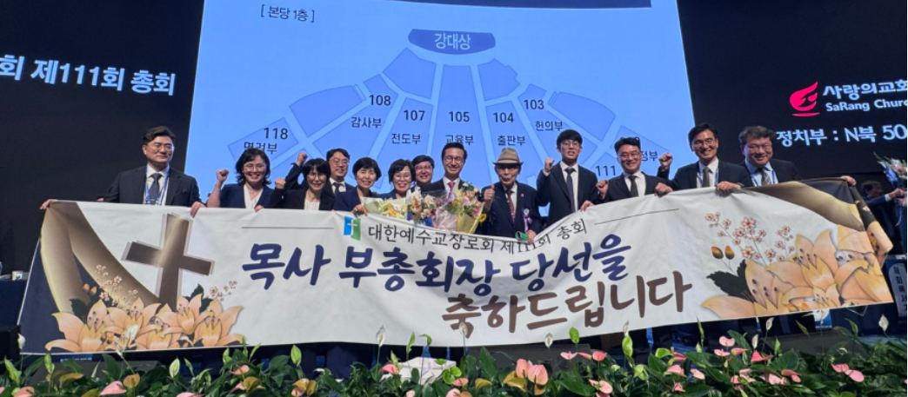
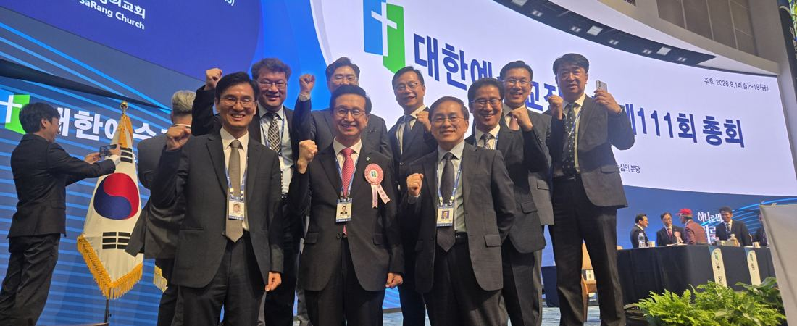
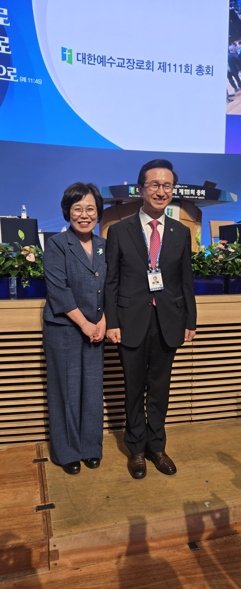

송기섭 목사, 어떻게 826표를 얻었나
— "조직" 아닌 "이미지"가 갈랐다
전국적 인지도와 조직력을 갖춘 전승덕 목사를 224표 차로 넘어선 완승. 네 건의 현장 보도를 겹쳐 읽으면 이번 선거는 조직력이 아니라 인격과 목회적 역량, 즉 이미지가 갈랐다는 그림이 드러난다.
지난 9월 14일 서울 사랑의교회에서 열린 대한예수교장로회(합동) 제111회 총회 임원선거에서 송기섭 목사가 목사부총회장에 당선됐다. 득표는 826표 대 602표, 224표 차의 완승이었다. 선거 전 교계 안팎에서는 전국적 인지도와 조직력을 갖춘 전승덕 목사의 우세를 점치는 시각이 적지 않았다. 그러나 뚜껑을 열자 총대들의 선택은 정반대였다. 왜 송기섭 목사였을까. 이하에서는 보도된 네 건의 기사를 종합해 당선의 배경을 여덟 갈래로 짚어본다.

1. "조직"의 시대에서 "이미지"의 시대로
현장을 취재한 매체는 이번 선거의 성격을 '이미지 선거'로 규정했다. 전승덕 목사는 임원 활동을 통해 쌓은 전국적 인지도와 친화력, 여기에 장로부총회장 출신 사돈의 지원까지 더해진 조직력을 갖추고 있어 선거 전만 해도 승부를 예측하기 어려운 상대로 꼽혔다. 반면 송기섭 목사는 절제된 이미지와 일반대학-신학대학원으로 이어지는 깔끔한 이력, 목회 현장에서 쌓아온 실적, 지역 교계에서의 꾸준한 활동을 앞세웠다. 결과적으로 총대들의 표심은 조직의 규모보다 후보 개인이 풍기는 신선함 쪽으로 기울었다.
세대교체라는 프레임
한 매체는 이번 당선을 두고 "합동 교단 지도력의 세대교체"라는 표현까지 썼다. 대구·경북과 부산·울산·경남권을 아우를 수 있는 1960년대생 지도자상으로 송기섭 목사를 자리매김하며, 오랜만에 영남권에서 존재감 있는 인물이 나왔다는 지역적 기대감도 함께 서술했다. 여기에 이승희 증경총회장의 조용한 지원이 더해졌다는 분석도 곁들여졌다.
2. 흐름을 바꾼 비공개 접촉 — 서울 묵동 모임 논란
선거를 코앞에 둔 9월 3일부터 8일 사이, 서울 묵동의 한 교회에서 최소 네 차례에 걸쳐 비공개 모임이 열렸다. 이 자리에는 목사부총회장 후보였던 송기섭·전승덕 두 목사와 장로부총회장 후보였던 손원재·지동빈 두 장로, 그리고 부서기·정치부장 후보들이 차례로 참석했다. 문제가 된 대목은 부서기 후보가 자신의 향후 부총회장 출마 지원 가능성을 다른 참석자에게 물었다는 정황이다 — 송기섭 목사를 향한 질문은 아니었던 것으로 확인된다. 선거규정상 담합·회유 소지가 있다는 지적이 나오면서 선거관리위원회의 사실관계 확인이 과제로 남았다.
이 모임 자체는 두 후보 모두 참석한 사안이지만, 정치 해설 기사들이 그려낸 최종 구도에서는 '구태 정치'라는 이미지가 유독 전승덕·지동빈 캠프 쪽에 더 강하게 씌워졌다. 오랜 조직력과 인맥에 의존한 선거운동 방식 자체가 달라진 총대들의 정서와 어긋났다는 것이다.

3. "하나님이 하셨다" — 이변으로 읽힌 표심
목사·장로 부총회장 선거 모두 막판 표심이 예상을 크게 벗어났다는 점에서, 한 교계 매체는 이를 총회 역사상 유례없는 결과로 평가하며 신앙적 해석까지 끌어왔다. 낙선자는 물론 당선자 측 캠프조차 결과에 놀랐다는 전언이다. 이 매체는 이번 선거 결과를 특정 인물이나 계파에 줄을 선 후보들에 대한 총대들의 준엄한 심판으로 규정했다.
선거 전 세미나에 참석한 후보 대부분의 속내에는 "참석하지 않으면 손해를 볼지 모른다"는 심리가 작용했을 것이라는 해석이 나온다. — 리폼드투데이 칼럼(2026.09.18) 요지 재구성
호남표, "결집"이 아니라 "분열"이었다는 반론
총회 직전 호남지역 여러 곳에서 수십 명 단위의 총대 모임이 있었고, 결과가 그 모임이 의도했던 방향과 반대로 나타났다는 점 자체는 여러 매체가 공통적으로 짚는 대목이다. 다만 이를 '호남표의 결집'으로 단순화하는 해석에는 반론도 있다. 김종균 목사(대구수성노회 증경노회장)는 실제 표심의 흐름을 호남권 전체의 결속이 아니라 오히려 지역 내부의 균열로 짚는다. 전북과 전남 총대들의 표심이 애초에 한 방향으로 묶여 있지 않았고, 이른바 개혁측 내부에서도 노선이 갈리면서 표가 흩어졌다는 것이다. 즉 특정 지역이 한 덩어리로 움직여 승부를 갈랐다기보다, 기존에 한 세력으로 분류되던 표들이 여러 갈래로 쪼개진 결과가 오히려 예상 밖의 표차로 이어졌다는 해석이다.
4. 3파전이었던 총무 선거와의 대비
같은 날 치러진 총회총무 선거는 박용규 목사(39.4%), 한기영 목사(31.6%), 박철수 목사(29.0%)의 3파전으로, 수십 년 만에 재임 총무가 탄생하는 이변을 낳았다. 목사부총회장 선거가 뚜렷한 1강 구도의 완승이었던 것과 달리, 총무 선거는 정치사조직 간 막후 대결과 언론전이 치열하게 얽힌 결과였다. 두 선거를 나란히 놓고 보면, 이번 총회에서 총대들의 표심이 후보군에 따라 서로 다른 셈법으로 움직였다는 점이 뚜렷해진다 — 부총회장 선거에서는 '이미지와 신선함'이, 총무 선거에서는 '조직 간 세력 균형'이 승부를 갈랐다는 것이다.
| 직책 | 후보 | 득표 | 득표율 |
|---|---|---|---|
| 목사부총회장 | 송기섭 목사 | 826표 | 약 57.8% |
| 전승덕 목사 | 602표 | 약 42.2% | |
| 총회총무 | 박용규 목사 | 562표 | 39.4% |
| 한기영 목사 | 451표 | 31.6% | |
| 박철수 목사 | 413표 | 29.0% |
5. '송포유' — 정치색 없는 자발적 헌신
이번 선거를 지켜본 이들이 공통으로 꼽는 또 하나의 변수는 송기섭 캠프의 지원 조직, 이른바 '송포유'의 존재다. 기존 총회 선거에서 흔히 보이던 정치사조직 간 동원이나 이해관계로 얽힌 조직표와는 결이 달랐다는 평가가 나온다. 특정 계파나 정치세력의 지원을 받아 움직이는 조직이 아니라, 송기섭 목사와의 개인적 신뢰와 목회 동역 관계에서 자발적으로 모인 지원팀이 선거운동 기간 내내 실무를 뒷받침했다는 것이다. 이 같은 '정치색 없는 순수한 조직력'은 상대 진영이 묵동 모임 등 기존 정치권 접촉 논란에 발목이 잡힌 것과 대비되면서, 오히려 신뢰를 더하는 요소로 작용했다는 해석이 가능하다.
6. 양대 정치세력에 휘둘리지 않은 민심
제111회 총회를 둘러싼 교권 지형은 크게 두 축의 계파 대결 구도로 그려진다. 그러나 목사부총회장 선거 결과를 놓고 보면, 총대들의 표심이 어느 한쪽 계파의 동원에 온전히 좌우되지 않았다는 점이 드러난다. 리폼드투데이 칼럼이 이번 선거를 "적폐 인물과 파벌에 대한 정치적 심판"으로 규정한 것도, 결국 계파 논리보다 총대 개개인의 판단이 우선했다는 진단과 맞닿아 있다. 교계 일각에서는 이를 두고 사람과 조직의 논리를 넘어 "하나님만 바라보며 나아가는 영적 뚝심"이 총대들의 표를 움직였다는 신앙적 해석을 내놓기도 한다. 눈에 보이는 세력 구도로는 설명되지 않는 표심의 흐름이 있었다는 뜻이다.
7. 기존 정치카르텔의 분열과 몰락
이번 선거 결과를 설명하는 또 하나의 축은 그동안 총회 정치를 좌우해온 기존 정치사조직, 이른바 '카르텔'들의 균열이다. 현장 보도들은 부회록서기 선거를 둘러싼 막후전에서 특정 사조직이 노회 천서 거부로 기반을 잃고 체면치레에 급급했던 정황, 계파 간 이해관계에 따라 후보를 부추기고 내세우는 낡은 방식이 오히려 역풍을 맞은 사례들을 전한다. 부총회장 선거에서도 마찬가지였다. 오랜 세월 총회 임원선거를 관행처럼 좌우해온 조직표와 계파 동맹이 예년만큼의 결집력을 보여주지 못했고, 그 빈틈이 고스란히 총대 개개인의 판단으로 채워졌다는 것이다. 결국 이번 선거는 특정 인물의 승리이기 전에, 기존 정치카르텔 구도 자체가 예전 같지 않다는 것을 보여준 무대였다는 해석이 가능하다.
8. 종합 — 여덟 가지 승인(勝因)
- 이미지 전략의 승리 — 절제된 인상과 깔끔한 학력·경력, 목회 성과를 앞세운 이미지 선거가 조직력 중심의 선거운동을 압도했다.
- 영남권의 신뢰성을 기반으로 한 전국적 확장 — 지역에서 다져온 목회적 신뢰가 특정 계파나 조직의 힘을 빌리지 않고도 전국 총대들의 지지로 자연스럽게 확산됐다.
- 세대교체 프레임 — 대구경북·부울경을 아우를 수 있는 60년대생 지도자상이 '새로운 시대'를 원하는 표심과 맞아떨어졌다.
- 구태 정치에 대한 반작용 — 조직·인맥에 기댄 선거운동 방식에 대한 총대들의 피로감이 상대 후보에게 더 크게 작용했다.
- 호남권 표심의 분열 — 전북·전남 총대들의 표심이 한 방향으로 묶이지 않았고, 개혁측 내부의 노선 분화로 표가 흩어지며 예상 밖의 표차를 만들어냈다.
- '송포유'의 자발적 헌신 — 정치색 없는 순수한 지원 조직이 계파 동원 없이도 실무를 든든히 뒷받침했다.
- 계파를 넘어선 민심과 영적 뚝심 — 양대 정치세력의 구도에 휘둘리지 않고, 하나님만 바라보며 나아가는 총대들의 판단이 표로 이어졌다.
- 기존 정치카르텔의 분열과 몰락 — 총회 정치를 관행처럼 좌우해온 사조직·계파 동맹이 예년만큼의 결집력을 보여주지 못하며 스스로 무너졌다.

남는 과제
완승으로 끝난 선거였지만 뒷그림자도 남았다. 묵동 모임을 둘러싼 담합·회유 의혹에 대한 선거관리위원회의 사실관계 확인, 그리고 천서 불허와 번복을 둘러싼 논란은 이번 총회가 안고 가야 할 숙제로 지적된다. 다만 여러 매체가 공통적으로 짚는 지점은 하나다 — 이번 결과가 남긴 메시지는 내년, 그다음 선거에도 유효할 가능성이 크다는 것. 조직의 규모보다 이미지와 신뢰, 그리고 변화에 대한 요구가 교단 정치의 새로운 셈법으로 자리 잡고 있다는 신호로 읽힌다.